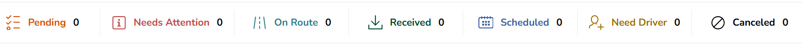
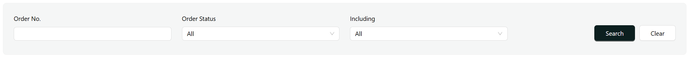
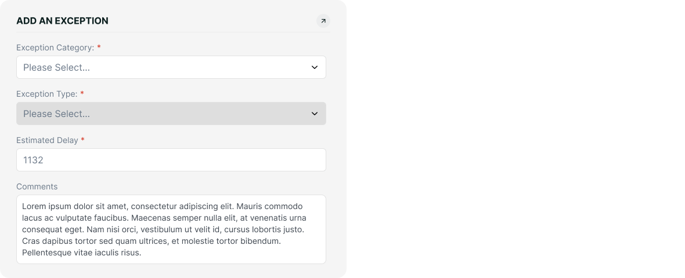

The TAM system supports three distinct user types, each serving different business functions:
TMM Admin Users:
Internal users who manage the core system operations. They have the highest level of access and can
manage containers, trucks, and all system resources. These users represent the company's internal staff
and have full administrative capabilities within their assigned branches.
Broker Users:
External partners who primarily handle order status updates and exception management. They act as
intermediaries in the transportation process but don't create orders themselves. Their main functions
include updating order statuses, managing exceptions, and communication through the messaging system.
Customer Users:
External users who create and manage orders. Unlike brokers, they have the ability to create new orders
but don't handle status updates. They primarily interact with the system for order creation, tracking,
and communication purposes.
TMM Admin Identification:
Determined in SSO database through either:
SitePortalUser.isInternalOnly = true ORSitePortalCompany.isInternalOnly = true where
SitePortalUser.companyId = SitePortalCompany.companyId
Broker Identification:
Identified in TMM database through:
TMM.CreditAccount.AP_Interface_Flag = 'Y' for accounts in their assigned AccountGroup
Customer Identification:
AP_Interface_Flag = 'Y'1. User Creation in SSO:
2. TAM
3. Link User to Accounts:
For TMM Users, they are not restricted by the AccountGroup limitation, meaning that they always have access to the full account list in the system.
All users receive these base access rights:
| Access Right | Internal Users | External Users |
|---|---|---|
| Create & Modify Orders | Yes | Customers Only (1) |
| View Reports | Yes | Yes |
| Create & Modify Users | Yes | Yes |
| Manage Accounts | Yes | Yes |
| View Trucks | Yes | No (Page not required) |
| View Containers | Yes | No (Page not required) |
| Create/Modify Trucks | Yes | No (Page not required) |
| Create/Modify Containers | Yes | No (Page not required) |
| View Dispatch (Calendar Page) | Yes | No (Page not required) |
| Assign Dispatch (UI Interactions) (2) | Yes | No (Page not required) |
TMM User Menu Options:(Assuming the user has all applicable access rights)
Broker/Customer Menu Options:
The system implements branch-based access control for containers and trucks through managing branch assignments. The current servicing account filter has been replaced with a managing branch filter, which provides more precise access control. This managing branch filter specifically displays only TMM branches, identified by Branch column = 1 in the database.
Users can only access and view trucks and containers where the managing branch matches one of their assigned branches(accounts). This restriction applies uniformly across all container and truck management interfaces. When accessing these resources, the system automatically filters the view to show only resources associated with the user's assigned TMM branches.
All users utilize the account filter in the order list view for switching between different branches/accounts. This functionality:
The order management system supports multiple statuses that reflect the lifecycle of an order:
Top-Level Status Filter:
Current:
Secondary Filters:
Current:
Exception Creation Fields (in order):
Mockup:
Exception Table Headers:
| Column | Description | Sample Data |
|---|---|---|
| Exception ID | Unique identifier for the exception | EXC001 |
| Category | Selected exception category | Delay |
| Type(s) | Comma-separated list of exception types | Traffic, Weather |
| Created Date | Exception record creation timestamp | 2024-01-08 09:30:00 |
| Resolution Date | Exception resolution timestamp | 2024-01-08 11:45:00 |
| Status | Current resolution status | Resolved/Unresolved |
| Estimated Delay | Expected delay duration | 2 hours |
| Actions | Available operations for the exception | Resolve/Edit |
Sample Exception Table Data:
| Exception ID | Category | Type(s) | Created Date | Resolution Date | Status | Est. Delay | Actions |
|---|---|---|---|---|---|---|---|
| EXC001 | Delay | Traffic, Weather | 2024-01-08 09:30 | 2024-01-08 11:45 | Resolved | 2 hours | View |
| EXC002 | Equipment | Mechanical Issue | 2024-01-08 14:20 | - | Unresolved | 4 hours | Resolve/Edit |